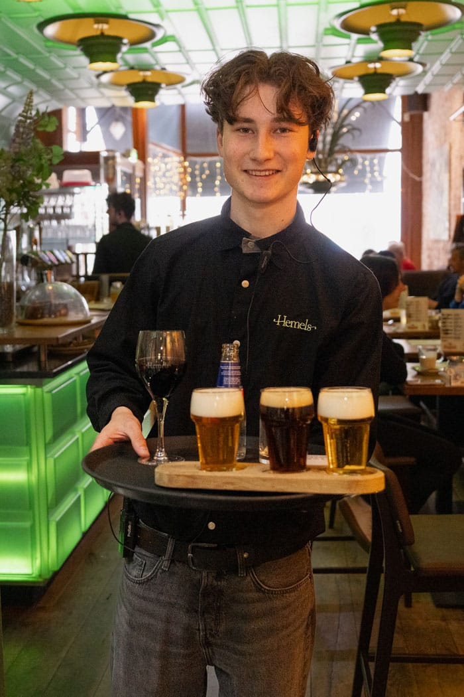

High Beer
€ 35,- p.p.
- Een proeverij van tapbieren vooraf
- Drie bieren naar keuze van de bierkaart (tap of fles)
- Nacho’s uit de oven met kaas, chili en dipsaus
- Gedroogde worst
- Oude Reypenaer kaas met mosterd en zoetzure komkommer
- Pittige cajunfriet met truffelmayonaise
- Bittergarnituur met loempia, bitterbal, kaassoufflé en kipnugget
- Een karaf gemeentepils
Reserveren aangeraden. Start dagelijks tussen 12.00 en 15.00 uur, op zaterdag tussen 15.00 en 16.00 uur.